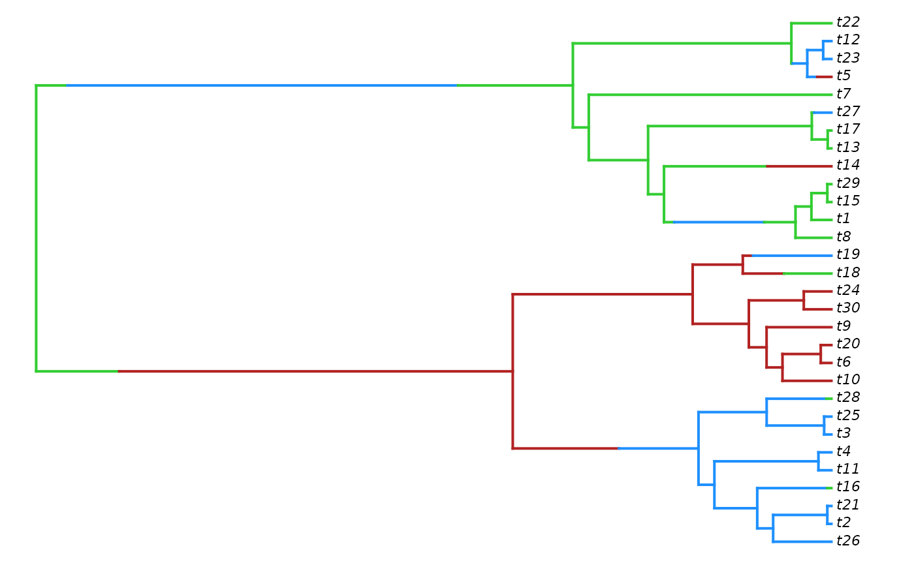

Stochastic character map (simmap) of phylograftR::toy_backbone with three states, "blue", "green" and "red",
named after colors to ease their visualization. It can be used as simmap to restrict grafting to branches in some states
(see the examples of the grafting functions).
It was simulated with phytools::sim.history() from a root in state "green", with equal transition rates between the three states
(0.04 per unit of time, i.e., one transition every 12.5 time units on average on a lineage, for a root age of 50).
Among the first 1000 seeds, the one used (50) is the first giving a balanced map:
The three states cover similar shares of the total branch length (about 34%
"green", 32%"red"and 34%"blue").A moderate number of transitions: 14 changes of state, along 12 of the 58 branches (no branch has more than 3 pieces).
Each state is found in 8 to 11 of the 30 tips.
Usage
data(toy_simmap)Format
An object of classes "simmap" and "phylo" (see phytools::make.simmap()), with the same tips, topology and branch lengths as
phylograftR::toy_backbone, and the additional elements $maps (for each branch, the duration spent in each state,
from the rootward node to the tipward node), $mapped.edge (total duration per state and branch), $node.states and $states (states of the nodes and tips).
See also
Other datasets and functions from phylograftR:
phylograftR::toy_backbonefor the backbone phylogeny.phylograftR::toy_missing_taxa_list_with_allowed_statesfor the list of missing taxa to graft, with associated allowed states of colors.phylograftR::graft_missing_taxa()to graft taxa within a target clade based on color states, using this dataset.
Examples
# Import the data
data(toy_simmap)
# Plot the map, using less flashy colors than the ones of the states
state_colors <- c(blue = "dodgerblue", green = "limegreen", red = "firebrick")
phytools::plotSimmap(toy_simmap, colors = state_colors, fsize = 0.7, ftype = "i")

# Duration spent in each state (sum on all the branches)
colSums(toy_simmap$mapped.edge)
#> green red blue
#> 82.32669 77.50429 82.21514